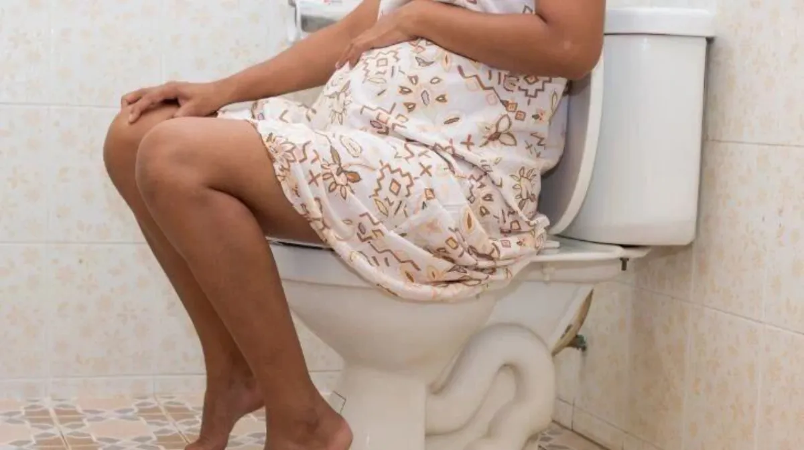

来这里找志同道合的小伙伴！
文|圆圈妈 图片|来自网络
01
昨天孖仔帮推文了一篇，双胎妈妈孕期一件羞答答尴尬的囧情，做春梦。
今天变本加厉，来点更尴尬还略带恶心的话题吧---孕期便秘
妊娠便秘的原因
（1） 怀孕后期卵巢会大量分泌黄体素，黄体素有滞留水份的效应，会使水份尽量留在细胞中，水份不够就容易影响肠胃道代谢，进而形成便秘。
（2） 胎儿在子宫内逐渐长大，怀孕后期子宫容易压迫到肠道，使肠道蠕动变慢而影响排便。
（3） 孕妇怀孕后期走路容易喘，或稍有活动就感到不适，所以自然会减少活动量，使肠胃活动也跟着变慢，进而增加大便在肠道停留时间，提高便秘的机会。
（4） 怀孕三个月开始，妈咪会开始补充铁剂，铁本身也会让便秘情况更明显。
妊娠便秘的后果
（1） 妊娠晚期，便秘会愈来愈严重，常常几天没有大便，甚至1-2周都未能排便，从而导致孕妇腹痛、腹胀。严重者可导致肠梗阻，并发早产，危及母婴安危。
（2） 曾有患者在妊娠38周时因便秘、肠梗阻导致小肠坏死而切除大部分小肠。
（3） 有的便秘孕妇分娩时，堆积在肠管中的粪便妨碍胎儿下降，引起产程延长甚至难产。
圆圈妈的经验分享
01
我感觉便秘似乎离我比较遥远。
未怀孕的时候我的肠胃功能一向工作正常，运行完美，一般都是一天一次大号，几乎不存在两三天才上一次大号。
孕期也很顺利，早晨醒来一大杯温开水喝下肚，很快就有便意了。即便是孕早期，吃啥吐啥的阶段，依然没有便秘的困扰。
可惜，晚节不保。就在医院保胎的头几天！我便秘了！居然便秘了！
也许是新环境不适应，
也许是吃的东西跟往常不一样了，
也许是使用了药物，打了硫酸镁和地塞米松。
也许是活动少了，整天躺床上躺到面瘫。
不管是什么原因，反正就是便秘了。
一天拉不出来，我已经焦躁得坐立不安了！
尤其是每天护士来量胎心量血压都会问一句，大小便正常吗？
我就好像一个小学生被叫上黑板默写，写不出来那样，困窘羞愧。
已经一天没有大号了，心理好大压力，感觉浑身上下都不对劲。
02
第二天，我猛灌了好几口温水，然后蹒跚地“冲”进厕所，试图拉出来。
依然不成功。
我想再使劲，试图一气呵成，幻想着像平时那样“扑”的一下就出来了！
可是厕所门口那一句温馨提示阻止了我的念头“切勿用力大便”
我知道这个意思，瞧瞧我那个被撑到变紫色的肚皮，分分钟都有可能一个用力就把娃给撑出来了！
我懊恼极了。
躲在楼梯口给圆圈爸打了个电话，
进急诊室没哭，
做内检没哭，
打硫酸镁没哭，
解不出大便，我大哭了！
隔着电话，对着圆圈爸大哭了！
圆圈爸一语惊醒梦中人，哇靠，这么难受，为啥不找医生啊。
我抱着肚子，“飞”似的冲进医生办公室，找到主治医师。扯着嗓门大喊
“医生，快！给我全世界最好的药，我要拉大便！”
是的，声音非常嘹亮，这是我住院以来最洪亮的一次发威了（因为打了三天的硫酸镁，奄奄一息了），居然在这种场合下临危不惧了。
最后，据说当天所有值班的医生护士都知道35床便秘了。因为第二天有好几个护士问我，用了开塞露之后是不是顺畅多了。
03
我苦笑了下。
那是我人生第一次用开塞露。因为我平时实在没有便秘的困扰，居然不知道这个世界上居然有那么神奇效果神速的药物，
说明书上写着要憋10分钟，
我居然憋不到2分钟就受不了了！
是的，第一次使用，简直是效果惊人！
千呼万唤，终于“屎”出来了！
我情不自禁脱口而出一个字“爽”
无不感叹那每天一次一个大号的日子是多么幸福满足啊！
要是有人此刻采访我：“幸福是什么”。
我一定毫不犹豫地回答，幸福就是可以天天轻松拉大便。
双胎妈妈如何预防孕期便秘
双胎妈妈从一开始就与单胎妈妈不一样，孕期便秘这些习以为常的小毛病自然不能掉以轻心，总结了些预防便秘的小贴士给有需要的准妈咪参考。
（1） 多吃富含纤维多的食物
这是经典药方，别不信，真管用！
当然因人而异，我觉得香蕉，火龙果最有效。都含有丰富的果糖（果糖可使肠道得到滑润）、果胶及纤维质，对改善便秘有很大帮助。注意哦，必须是那种又短又胖的大蕉，海南蕉越南蕉没用，吃多了反而反酸胃胀。
火龙果不管红肉白肉，进口还是国产都有效。
如果有妊娠糖尿病的，水果不能吃，那可以多吃蔬菜，芥菜，芹菜，红萝卜都很见效。
番薯也可以，但不能吃太多，容易胀气！
有人说蜂蜜水也有效，但是老人家说孕期喝蜂蜜水会动胎气，容易早产。不管真还是假，双胎妈妈最忌讳早产了，还是宁可信其有不可信其无。我表示不敢喝！
（2） 恰当使用药物
有一种进口药，小麦纤维素颗粒。主要成分小麦纤维素，无副作用，但是味道比较奇怪，甚至是难以下咽。单独吃，跟吃糟糠一样。
可加入食物或饮料中服用，如汤、粥、牛奶、果汁等。
用在我身上很有效果。自从那次便秘后，每顿吃白粥前往里加入小麦纤维素，一直吃到产后第一次排便，慢慢调理好肠胃之后才没继续吃。
如果实在拉不出来，可以在医生建议下用开塞露或其他药物。但最好不用经常使用，用多了就没有效果了。不然我为什么憋不到2分钟，就成功了。因为首次使用，效果是最好的！
不到万不得已，不要轻易服用泻剂，以免伤胎气，甚至引起流产。
（3） 适当的运动
因为导致便秘的一个主要原因是活动过少，
许多女性怀孕后，惟恐活动会伤了胎气，加上家人的特别“关照”，往往活动减少，整天坐着或躺着，使得蠕动本已减少的胃肠对食物的消化能力下降，加重腹胀和便秘的发生。
其实适量的运动可以增强孕妇的腹肌收缩力，促进肠道蠕动，预防或减轻便秘。
进入孕晚期的双胞胎妈妈通常肚子已经“貌似小山丘”了，但依然可以尝试着抱着肚子扶着墙壁走走动动，上下楼梯，这没有什么大问题的。
除非已经破水见红或者宫颈短，或者单绒单羊的孕妇亦或者其他特殊情况，不得不平躺，适当走动应该得到鼓励！
（4） 多补充水分
体内水分如补充不足，便秘就会加重，因为水分不足，粪便就无法形成，而粪便太少，就无法刺激直肠产生收缩，也就没有便意产生。所以，补充水分是减轻便秘的重要方法。
我每天早晨，空腹喝200ML 的水，每日至少喝1000毫升水。这样可达到润肠、刺激肠子蠕动的目的。除了温水，还有低温的鲜牛奶，每天至少236ML的鲜奶摄入量。据说孕晚期和牛奶长胎！也许真的很有用，圆圈出生，体重都在五斤以上。
当然，不能因为牛奶长胎就疯狂喝，凡事要有个度，过量牛奶会导致大便变硬，加重便秘程度。
如果想长胎又担心便秘，那可以喝酸奶，含益生菌，能调节肠道功能，对排便有一定的效用，孕妈咪最好选择低脂酸奶，以避免摄取太多糖份，增加妊娠糖尿病的风险。
（5） 睡眠和好心情同样重要
因为是被圆圈爸五花大绑地拖进急诊室了，一点心理准备都没有，再加上人生第一次进急诊室，第一次在手上放留置针，第一次在众目睽睽下被一个男医生粗暴地内检。
我的身心受到不可言喻的创伤，要经历过的人才知道那种无奈和无助感。
可想而知，好睡眠和好心情此时此刻压根轮不到我，但便秘却缠上我了。
因此，不管双胞胎妈妈身在何处，都要有一个乐观的心态，还要保持充足的睡眠，蓄势待发迎接孕晚期的各种挑战，让便秘无处遁形！
最后，祝愿双胞胎妈咪的孕期顺利，让“臭臭”每天都能准时报到！
作者简介：圆圈妈，资深屌丝女+腐女一枚，家有孖仔男两枚。
微信公众号ID：babytwins-mummy 孖仔帮
个人博客：双胞胎萌娃会（www.sgguy.com）
一个专注双胞胎群体的网站，面向家长，每天分享亲子养育知识
目前孖仔帮建立了微信群
孖仔帮双胞胎孕期群&孖仔帮双胞胎养育群
家长们可以根据需要进入任意一个群
想要进入孖仔帮的微信群
可以加圆圈妈的微信。
由圆圈妈邀请入群
欢迎加入双胞胎大家庭
让我们一起学习成长，快乐育儿！
点击下方“阅读原文”查看更多
